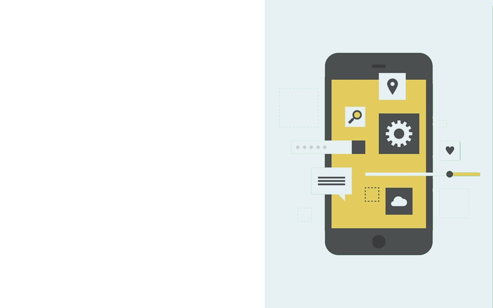

И вот я — верстальщик. Что дальше?
И вот я — верстальщик. Что дальше?
Александра Шинкевич (@neesoglasnaja)
Есть верстальщики-новички?

Фронтенд-разработчик

Истина где-то рядом
- Другие языки, подходы и парадигмы

- Мобильная/десктопная разработка
- Ops/DevOps

- Железо и IoT
- Дизайн и UX, фото и видео
- BA и QA

- SEO и SMM
- Менеджмент и управление проектами
Ищем знания

Ищем знания
- Практика
- Онлайн-курсы
- Интерактивные курсы
- Open source
- Челленджи
- "Падаванство"

В чем проблема?
- Освоение технологий хаотично
- Знания поверхностны
- Нет обратной связи
Меня всему обучат на работе
За ваше развитие отвечаете вы,а не работодатель
Шаг 1. Составить план
- Роадмап — будьте последовательны
- Ставьте определенные сроки
- Следите за прогрессом
Шаг 2. Пишите код
- 40 часов на работе
- + вне работы (~20 часов)
Шаг 3. Обратная связь
- Найдите наставника
- Просите код-ревью
- Делайте код-ревью самостоятельно
Выйти из матрицы

Soft skills
"Путь программиста", Джон Сонмез

Продуктивность
- Логгируйте свое время
- Делайте анализ
- Перестаньте системно перерабатывать
Ответственность
- Вы отвечаете за код, который пишите
- Помните о возможной цене ошибки
- Тестируйте и перепроверяйте
- Будьте "здоровым" перфекционистом
Путешествия и новые впечатления
Ссылки на тему
- "Идеальный программист", Роберт Мартин
- "Программист-фанатик", Чед Фоулер
- "Программист-прагматик", Дейв Томас и Энди Хант
- "Чистый код. Создание, анализ и рефакторинг", Роберт Мартин
- "Совершенный код", Стив Макконнелл
- "Мифический человеко-месяц", Фредерик Брукс